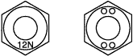

STANDARD BOLT > HOW TO DETERMINE NUT STRENGTH |
| Present Standard Hexagon Nut | Old Standard Hexagon Nut | Class | |
| Cold Forging Nut | Cutting Processed Nut | ||
 No Mark | - | - | 4N |
No Mark (w/ Washer) | No Mark (w/ Washer) |  No Mark | 5N (4T) |
 | - | - | 6N |
| - |  |  | 7N (5T) |
 | - | - | 8N |
 |  |  No Mark | 10N (7T) |
 | - | - | 11N |
|  | - | - | 12N |